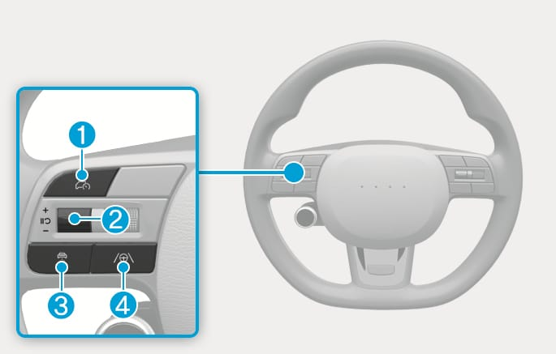
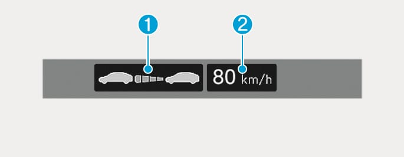
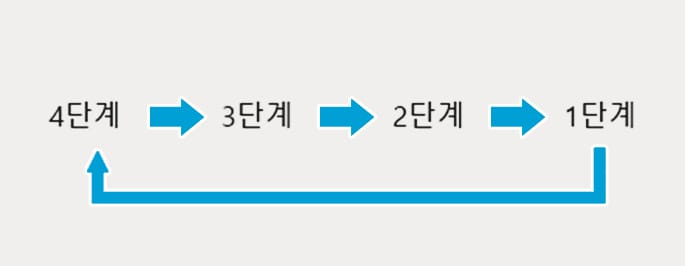
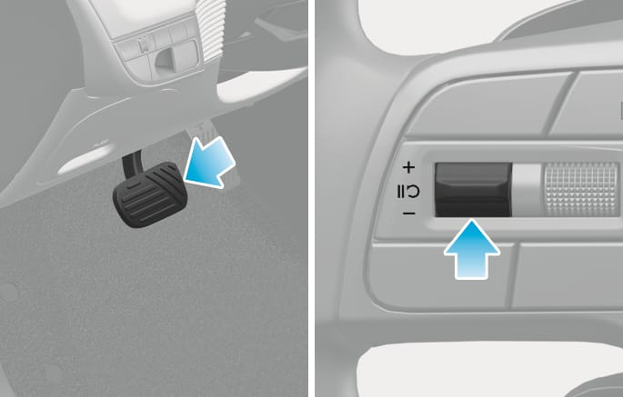

스마트 크루즈 컨트롤 작동
다음의 조건이 모두 만족되면 스마트 크루즈 컨트롤을 켤 수 있습니다.
-
기어가 'D'(주행)에 위치
-
작동 속도 범위 내로 주행 중
-
전방에 차가 없을 경우: 10-180 km/h
-
전방에 차가 있을 경우: 0-180 km/h
-
-
차체 자세 제어(ESC) 장치, ABS 장치 켜짐
다음과 같은 경우 스마트 크루즈 컨트롤을 켤 수 없습니다.
-
파워다운 (
® ) 표시등이 켜져 있는 경우 -
운전석 도어가 열려 있는 경우
-
전자식 파킹 브레이크(EPB)가 체결된 경우
-
차체 자세 제어(ESC) 장치, ABS 장치가 작동 중인 경우
-
전방 충돌방지 보조의 제동 제어가 작동 중인 경우
-
원격 스마트 주차 보조의 제동 제어가 작동 중인 경우(사양 적용 시)
정차 상태에서 전방에 차량이 있는 경우에는 스마트 크루즈 컨트롤을 켜려면 브레이크 페달을 밟아야 합니다.

2C_SCCButton
스마트 크루즈 컨트롤을 켜거나 끄려면 주행 보조 버튼(1)을 누르십시오.
-
스마트 크루즈 컨트롤을 켜면 현재 클러스터의 속도가 설정속도로 설정됩니다.
-
전방에 차량이 없다면 설정된 속도로 주행 속도가 유지됩니다.
-
전방에 차량이 있다면 설정된 차간거리를 유지하기 위해 속도를 조절합니다. 전방 차량이 가속하여 차간거리가 멀어지면 설정된 속도까지 가속한 후 설정된 차간거리가 유지되면 정속 주행합니다.

2C_SCCOperationStatusInfo
작동 중
클러스터 상단에 스마트 크루즈 컨트롤의 작동 상태를 표시합니다.
- 전방 차량 유무 및 설정된 차간거리 단계
- 설정 속도
일시 해제
일시 해제 상태에서는 자차와 설정속도가 회색으로 표시됩니다.
전방에 차량이 있는 경우 회색으로 표시합니다. (사양 적용 시)
-
수동 속도 제한 보조가 적용된 경우에는 주행 보조 버튼을 길게 누르면 스마트 크루즈 컨트롤이 꺼지면서 수동 속도 제한 보조가 켜집니다.
-
차량의 속도가 30 km/h 이하일 때 주행 보조 버튼을 누르면 스마트 크루즈 컨트롤의 속도가 30 km/h로 설정됩니다.
+/- 스위치(2)를 짧게 올리거나 내리십시오. 설정속도가 1 km/h 단위로 올라가거나 내려갑니다.
-
설정속도를 빠르게 높이려면 +/- 스위치(2)를 길게 올리거나, 내리십시오. 설정속도가 10의 배수로 변경됩니다.
-
30-180 km/h 의 속도로 변경할 수 있습니다.
+ 스위치를 길게 올려 설정속도를 빠르게 변경하면 주행 속도가 빠르게 증가할 수 있습니다. 속도 설정 시 주의하십시오.
차량 특성 및 주행 환경에 따라 주행속도가 설정속도에 도달하지 못할 수 있습니다.
차간거리를 변경하려면 차간거리 버튼(3)을 반복하여 누르십시오.

2C_SCCDistanceStage
예를 들어, 차량의 속도가 90 km/h이면 다음과 같이 차간거리가 유지됩니다.
-
약 52.5 m(4단계) > 약 40 m(3단계) > 약 32.5 m(2단계) > 약 25 m(1단계)
스마트 크루즈 컨트롤을 끄거나 일시 해제한 후 다시 켜면 마지막으로 설정한 차간거리 단계로 작동합니다.
스위치나 버튼을 동시 조작할 경우에는 정상적인 작동이 어려울 수 있으니 조작에 유의하십시오.

2C_SCCTemporaryPausing
스마트 크루즈 컨트롤을 일시 해제하려면 브레이크 페달을 밟거나
스마트 크루즈 컨트롤이 일시 해제 된 후 다시 켜려면 + 스위치를 올리거나, - 스위치를 내리거나,
-
+ 스위치를 올리거나 - 스위치를 내리면 스마트 크루즈 컨트롤의 속도가 현재 클러스터의 속도로 설정됩니다.
ç 스위치를 누르면 일시 해제하기 전의 설정속도로 설정됩니다.
스마트 크루즈 컨트롤이 자동으로 일시 해제되면 경고문 “스마트 크루즈 컨트롤 시스템이 해제되었습니다”와 경고음을 통해 자동 일시 해제를 알립니다.
아래와 같은 상황에서는 스마트 크루즈 컨트롤이 자동으로 일시 해제됩니다.
-
190 km/h 이상으로 가속할 경우
-
일정시간 이상 정차할 경우
-
가속 페달을 일정 시간 이상 지속해서 밟을 경우
-
스마트 크루즈 컨트롤 작동 조건을 만족하지 않는 경우
정차 상태에서 스마트 크루즈 컨트롤이 자동으로 일시 해제되면 전자식 파킹 브레이크(EPB)가 체결될 수 있습니다.
스마트 크루즈 컨트롤이 해제되면 전방 차량과의 간격이 유지되지 않습니다. 전방 도로 상황 및 주행 상태를 확인하고 필요하면 브레이크 페달을 밟아 차량 속도를 직접 조절하십시오.
운전자가 가속 페달을 밟아 설정속도를 변경하지 않고 일시적으로 가속할 수 있습니다. 가속하는 동안에는 클러스터의 설정속도, 차간거리 표시가 깜빡입니다. 단, 가속 페달 밟음 정도가 부족한 경우 차량이 감속될 수 있습니다.
가속 페달로 일시적으로 가속할 때는 전방에 차량이 있어도 속도와 차간거리가 자동으로 조절되지 않으므로 주의하십시오.
스마트 크루즈 컨트롤 작동 중에 운전석 방향의 방향지시등을 작동시키면 추월 가속 보조 기능이 작동합니다.
다음의 조건이 모두 만족되면 추월 가속 보조 기능이 작동합니다.
-
60 km/h 이상으로 주행 중 전방에 차량이 있는 경우
다음과 같은 경우 추월 가속 보조 기능은 작동하지 않습니다.
-
비상 경고등이 켜져 있는 경우
-
차간거리 유지를 위한 감속 제어 중인 경우
-
추월 가속 보조로 일시적인 가속 중 위험한 상황이 발생할 수 있으니 항상 주의를 기울이십시오.
-
주행 방향이 다른 국가에서 사용할 경우 위험한 상황이 발생할 수 있으니 항상 주의를 기울이십시오.
스마트 크루즈 컨트롤 작동 시 평소 학습한 운전자의 주행 성향(차간거리, 가속 강도, 반응 속도)을 반영합니다.
운전 스타일 연동이 작동하면 클러스터에 차간거리 표시가 흰색으로 바뀌고, 운전자의 주행 성향이 반영된 차간거리 단계 및 목표 차간거리가 표시됩니다.
운전자의 주행 성향이 변하면 이전에 반영된 차간거리, 가속 강도, 반응 속도가 변할 수 있습니다. 항상 주의를 기울이십시오.
-
운전 스타일 연동의 차간거리, 가속 강도, 반응 속도는 충분히 주행해야 실제 운전자의 주행 성향이 반영됩니다.
-
운전 스타일 연동은 주행 안전에 영향이 있는 주행 성향 (급가속 등) 또는 주행 상황은 반영하지 않을 수 있습니다.
-
눈길, 빗길, 안개, 급경사 구간 등의 특수한 주행 환경에서 주행하는 경우 운전 스타일 연동은 운전자의 주행 성향과 다르게 작동할 수 있습니다.
-
목표 차간거리는 차량의 속도와 설정된 차간 거리 단계에 따라 달라집니다. 속도가 낮은 경우 차간거리 단계를 변경하더라도 목표 차간거리의 변경량이 적을 수 있습니다.
-
전방 차량은 자차와 전방 차량과의 실제 거리를 반영하여 표시됩니다.
-
운전 스타일 연동은 운전자의 차간거리, 가속 강도, 반응 속도 외 다른 주행 성향을 반영하지 않습니다.
비작동 알림
스마트 크루즈 컨트롤이 작동할 수 있는 조건이 아닐 때 기능을 사용하기 위해 주행 보조 버튼이나 + 또는 - 스위치,
정차 후 다시 출발 안내
스마트 크루즈 컨트롤 작동 중에는 전방 차량이 정차하면 따라서 정차합니다. 일정 시간 내에 전방 차량이 출발하면 자동으로 출발합니다.
정차 후 일정 시간이 지나면 클러스터에 위 그림과 같이 안내문 “전방 차량 출발 시 스위치 또는 페달을 조작하십시오”가 표시됩니다. 다시 출발하려면 가속 페달을 밟거나, + 또는 - 스위치를 위아래로 누르거나
안내문 표시 중에 전방에 차량이 없거나 차간거리가 먼 경우 + 또는 - 스위치를 위아래로 조작하거나
전방 상황 주의 알림
스마트 크루즈 컨트롤이 전방 차량과 거리를 유지하며 일정 속도 이하로 주행하는 중에 전방 차량이 사라지면 경고문 “전방 상황에 주의하십시오” 와 경고음을 통해 전방 상황 주의를 알립니다.
전방 상황 주의 알림이 발생하면 새롭게 나타난 전방의 차량이나 물체와 충돌할 수 있습니다. 전방 도로 상황 및 주행 상태를 확인하고 필요하면 브레이크 페달을 밟아 직접 속도를 조절하십시오.
전방 충돌 경고
스마트 크루즈 컨트롤 작동 중에 전방 차량과의 충돌 위험이 높을 경우 전방 충돌방지 보조가 작동하여 충돌 경고를 알립니다. 즉시 전방 도로 상황 및 주행 상태를 확인하고 필요하면 브레이크 페달을 밟아 직접 속도를 조절하십시오. 본기능에 대해서는 '전방 충돌방지 보조 (FCA)'의 상세사항 및 경고/주의/알아두기 내용을 확인 하시기 바랍니다.